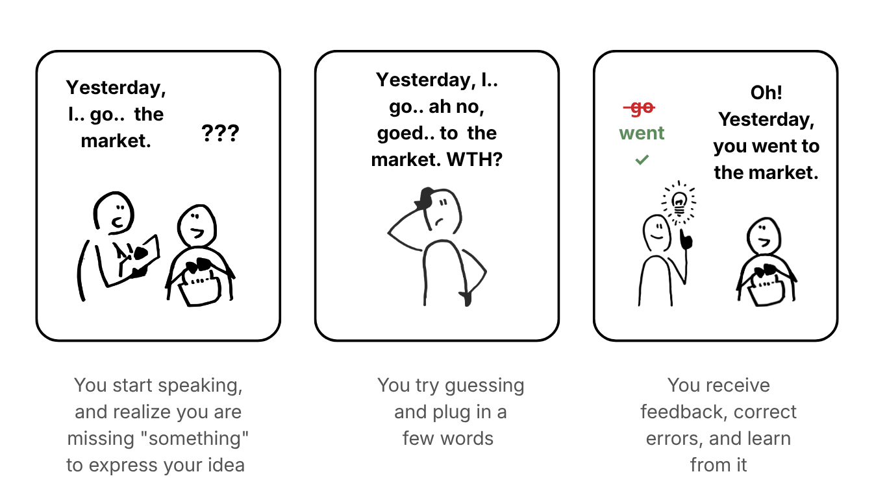
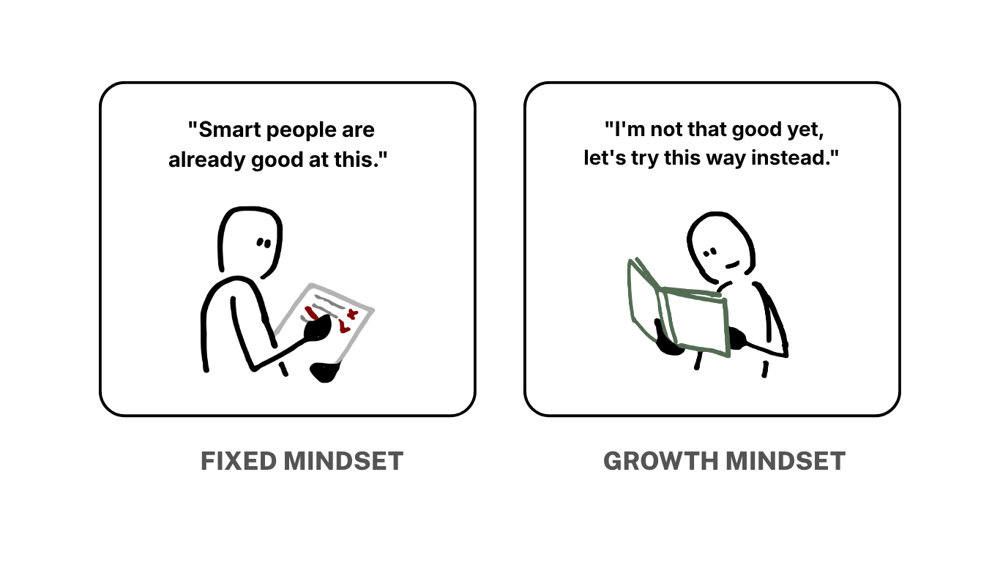
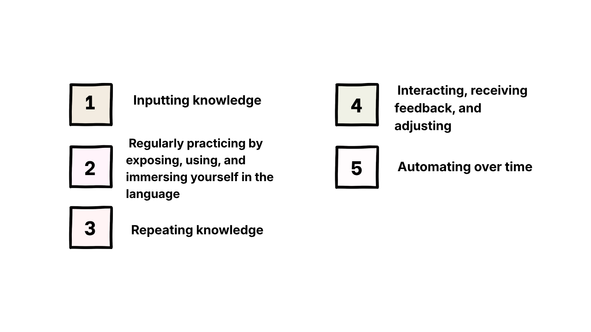
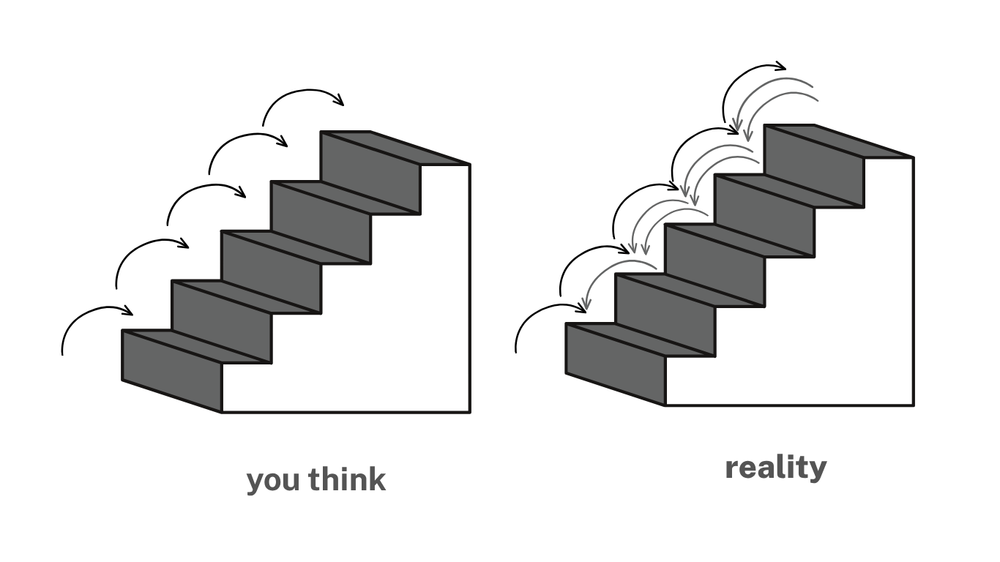
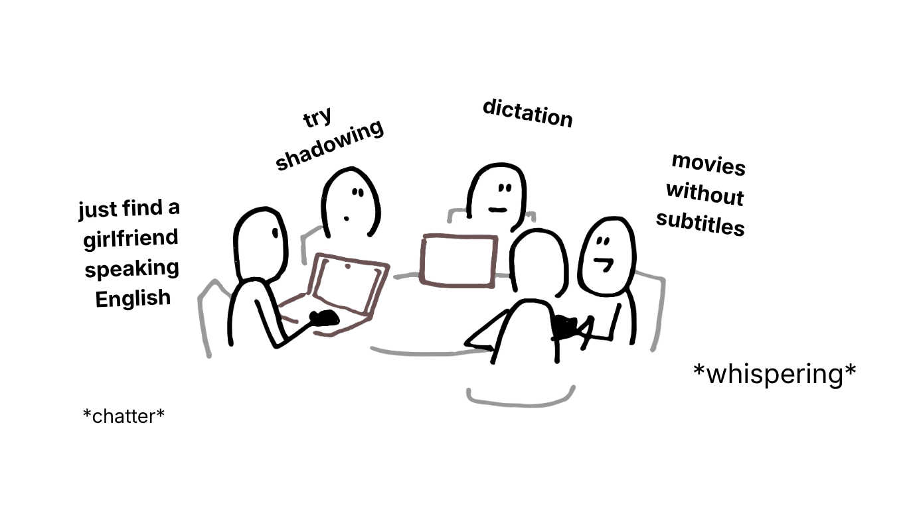

Adults aren't afraid of learning a language. They're afraid of…
Notes from an adult still learning, on the fears sitting next to language study.
(this is not an app ad)
HelloTalk is the app I will seed for free forever (unless someone ships a better one lol). That's where I actually got my English and Chinese speaking up, because outside there's barely anywhere to practice. But on there you also run into people who only sit in the room and listen, never turn on the mic. They're shy, especially the new ones. Some people who've been studying from books for years hit the same wall when they try to switch to speaking.
In those moments, I and the others often go: just talk, say anything. Those pep talks usually work for a second, then they dissolve into thin air.
I used to be exactly the same. I believe that learning the thing itself is often less hard than the psychological walls around it, especially for adults.
So I looked into this a bit, and filtered those "aches" through what I've seen or lived, to write this. I think seeing them more clearly is part of what makes motivation last.
Alright. Let's start.
1. I understand when I listen. Why can't I speak?
This is an easy loop for anyone learning English, including me: Can't speak yet → Feel shy, don't dare to speak → Still can't speak.
A friend and I used to share the same idea: pick a paragraph, write it out, parse the meaning, parse the grammar, practice reading it, and only once the reading is stable do we try saying it ourselves. It sounds fairly logical. It was better for my reading than for my speaking.
Eventually I realized learning and speaking need to run in parallel. If you want to actually use the language, start speaking and writing as early as you can.
To explain this, Merrill Swain has a name for it: the comprehensible output hypothesis (I'll just call it "output").
Listening and reading are input, and they're much safer. Speaking and writing are what make learning active, and I'll explain why below. (ChatGPT told me not to write that sentence because it's a bit biased. Anyway :v)

First, after you say something, you start to notice what's off — a missing word, grammar in a heap. Then you try whatever you can think of, right or wrong, until someone corrects you. The brain starts comparing, taking apart why that sentence has to go that way.
So if you freeze while speaking, don't treat it as a disaster. That's the learning happening.
Hmm. This output method also has a side effect: pushing someone to speak too early can make them anxious and not exactly comfortable. Krashen (the input hypothesis guy) calls that anxiety the affective filter, and he says it blocks intake. I feel this one in my bones, so I'll spend a long stretch on that fear next.
2. What if they find out I'm not good?
I don't know how this plays out in every language, but English and Chinese have gotten so common lately that people who already use them don't feel that special anymore, and people who don't yet worry that "Alpha kids already speak better than I do."
You know that, and you still decide to start again. You download an app to practice speaking, with real people.
The hard part: everyone on the app also needs to practice speaking. So not everyone has the patience to fix pronunciation or explain meaning to a beginner, bit by bit. I've seen this too many times. In a conversation, people who already speak reasonably well often expect the new person to already be able to talk at some basic level. If the gap is too wide, one side gets tired, the other shrinks.
I can handle everyday conversation, and I still struggle to join deeper talks about a field, because I don't have the vocabulary to follow. I can ask again a few times, but if everyone is in flow I don't dare ask more — I don't want to break the air.
Am I afraid of being judged for not knowing a word, mispronouncing, getting grammar wrong? Honestly, no. What I am afraid of is the label: that I'm slow, that I didn't study hard enough as a kid, that I haven't tried enough, that I learn inefficiently. People will see that when I start talking more, asking more, and showing how clueless I am until they feel sorry for me or annoyed. I'll be disappointed in myself before anyone else actually does that.
And that's before you get to how people tend to think that speaking a language well means you're smarter, have better opinions, and (maybe) get treated better in a room.
Uay. Sounds scary, right?
But every time you feel that fear, please remember that most people have been exactly where you are at the starting point. However confused and uncool you look, they can look like that too. That confusion isn't proof of failure. It's a part of learning that has to happen.
If you don't believe me, try looking at it through Carol Dweck's growth mindset — the Stanford psychologist known for two ways of thinking: fixed mindset and growth mindset.
Simply: if you believe ability is something you either have or don't, that only smart people have already learned it, and you're not that type so studying forever won't change anything — that's a fixed mindset.
If each mistake is one more thing you now know, and each time it doesn't stick is a chance to try another way — that's a growth mindset.

Growth mindset by itself doesn't solve the problem. You can't just manifest day and night and watch it come true. But in a lot of cases, if you believe ability can grow, it's easier to loosen up, keep learning, accept the gaps, and flex into another way when the old one isn't doing anything anymore.
When we stare too hard at how we look to other people, it's also harder to focus on the learning.
A few small tricks for this fear:
One, name your status up front: "I'm new at this — could you speak a little slower?"
Two, instead of walking in to prove you can speak, try walking in to see if you can be useful. Even fluent people get it wrong sometimes. When you focus on contributing to the other person, you notice yourself less. So move the spotlight over there :)) (in a good way). I learned this from a very old video that has almost nothing to do with language learning:
You can also pick a slightly easier room to rehearse in first.
When I first practiced speaking, I downloaded an app for anonymous 1:1 chats with strangers and met a lot of foreigners. For a while I would go in, manage a couple of hello-how-are-yous, and when I got stuck I hit quit, went outside, learned how to answer that line, then went back in and talked to someone else.
Real life doesn't have a quit button, so before you walk out, find someone at the same level to practice with.
If you want to practice with foreigners, early on look for people who aren't native speakers (say, a Korean friend also learning English). Talking with them, you notice most people don't need you to speak or hear at 100%. They just need to get the meaning.
You can also use an AI app. It can help you drill some daily lines and take the pressure down at the start. When I can, I still prefer real people, because it forces you to react right then.
Oh, and if you actually have to face the real thing? In my experience, don't be shy about opening Google Translate (or whatever can translate). If you've followed most of the conversation, asking again sometimes, or pulling out your phone to look up a word, is completely normal. Everyone does it.
I've met foreign friends a few times — some native, some much more fluent than I am. They also had their phones ready, so when they said a word I didn't get, they'd open it for me to see.
3. What if I keep studying and never see progress?
The first question someone newly determined to learn a language usually asks is: "How long until I reach this level, this band score, speak like this?"
Kids care less, because they have fewer practical targets, and they don't need an exact date.
The answer is always: It depends.
We might hate that answer. That's just what language learning is.
There is a fairly common way to look at the process that might help us estimate better:
Explicit learning: you actively study vocabulary, grammar, follow lessons in books and materials. This part helps you understand, explain the theory, and steer the study.
Implicit learning: by being around it — listening a lot, reading a lot, speaking a lot — the brain slowly gets used to the rhythm and the patterns. This is the part that mostly lets you fire off sentences without carefully translating or weighing every grammar point first.
The two don't split cleanly. They feed each other.
On the explicit side, we can control the pace a little. How many words memorized, which grammar you've covered. Results from implicit learning are harder to measure.
Language learning often looks like this:

I go on the app to practice speaking. I made a few friends when I was just starting. After a few months they came back and said I'd improved a lot. Meanwhile I didn't feel like I was learning much each day.
I also started to see that language learning isn't adding knowledge every day. It's repeating a lot, nudging forward a little, repeating again, until one day you notice you can actually talk.

I think the solution people often reach for, to have a milestone that calms them down, is sitting a certificate exam. At least it's a test that can return a result. Hmm. I won't say much about whether you should, because everyone has different goals.
I took TOEIC and haven't prepped for other certificates. I studied about 3–4 months.
I notice people often treat exam prep as the main thing, and speaking, conversation, actually using the language as support activities. I believe that if you want to use it, you should flip the importance: focus on using it, and treat the certificate as a support for structure, materials, grammar, and so on.
4. What if I pick the wrong way to study?
Every time I start a language, I go online and watch 7,749 videos and crawl through Phở Bò groups to read other people's journeys. The posts usually list every tip and method they can think of: shadowing, dictation, reality shows, talking to yourself, and so on. I wasn't even sure I should learn all four skills at once or one then the next. Should I pick one method, or mix them all.

The main problem probably isn't the fear of studying the wrong way. People are actually afraid of wasting time.
I think that's why everyone wants a clear path and to know which method is the good one, so they can just cling to it and stop thinking in circles.
But a method being good doesn't mean it fits us.
For example, the internet often says you should watch films or TV to soak in the language.
I study Chinese and I don't like Chinese films. Using Chinese social media when I barely had any vocabulary was both messy and draining. And if you're introverted, or you have social-communication stuff going on, and you also don't like talking — that's even harder. Anything you already don't like is hard to keep up.
After a few rounds of fumbling, two pieces of advice actually helped me.
One, at the start, try 2 or 3 of the most common textbooks, pick exactly one, and stick to it — if you really don't know how to study yet.
A textbook may not be perfect, but it always has a fairly complete, concrete system, so you can go step by step without burning more time just being confused. After you've been studying a while, fill the gaps with other materials.
Don't forget: our goal is not to finish the textbook. It's to use the language. So what I mean is: start using it (speaking, writing) early, and treat the textbook as support for that.
Two, the best method is the one that covers two things:
Easiest to keep going
It works
And "works" doesn't have to mean progress every day. Look at whether, after a stretch of time, your ability to use the language has actually changed.
Cling to one thing first. Meanwhile you can still try other stuff, or switch whenever you find something better.
Language learning is a long game. Unless you need something in a rush, pick the things that interest you and make the game more fun. That's what I think.
Okay. The post has done its job. I think there's enough here; you can go further through the references below. Any extra thoughts or corrections are welcome — I'm still learning too.
Thanks for reading this far. Hope you study with some joy and a bit less worry.
References
Dweck, C. S. (2006).Mindset: The New Psychology of Success. Random House.
Shahini, A. (2025).Language learning theories: A student's guide. Palgrave Macmillan. (I couldn't get to Swain and Krashen's original papers; I only read them summarized in Shahini.)
Ellis, R. (2005). Principles of instructed language learning. System, 33(2), 209–224.
(không phải quảng cáo app)
HelloTalk là cái app mà tôi sẽ muôn đời seeding miễn phí (trừ khi người ta ra app mới tốt hơn lol). Tôi lên trình nói tiếng Anh, tiếng Trung cũng từ đó, tại vì ở ngoài làm gì có cơ hội mà luyện. Nhưng mà trên đó thì cũng dễ gặp mấy bạn chỉ vào room nghe thôi chứ không chịu bật mic, nói chung là ngại, nhất là mấy bạn mới. Cả một số bạn đã quen học theo sách vở lâu rồi cũng rơi vào tình huống tương tự khi bắt đầu chuyển sang speaking.
Những lúc như thế, mặc dù tôi và những người còn lại sẽ hay động viên là cứ nói thôi, nói gì cũng được. Nhưng mà những câu khích lệ đó thường chỉ có hiệu quả trong chốc lát rồi sẽ tan biến vào hư không.
Ban đầu tôi cũng bị y chang. Tôi tin rằng việc học một thứ thường không khó bằng những rào cản tâm lý xoay quanh việc học đó, nhất là với người lớn.
Thế nên tôi có tìm hiểu qua một tí, và cũng chắt lọc lại những “cơn đau” đó theo những gì mình đã từng thấy hoặc trải qua để viết thành bài này, vì tôi nghĩ là việc hiểu rõ hơn về chúng sẽ góp phần tạo nên động lực bền vững hơn cho bọn mình.
Nào, bắt đầu thôi.
1. nghe thì hiểu nhưng mà sao không nói được?
Đây là một vòng lặp dễ gặp của những ai học tiếng Anh, kể cả chính tôi: Chưa nói được → Ngại, không dám nói → Lại chưa nói được.
Hồi trước tôi và bạn tôi đều có một tư tưởng chung: Chọn ra một đoạn văn, viết ra, phân tích nghĩa, phân tích ngữ pháp rồi tập đọc, đọc ổn rồi mới tự nói lại thử. Nghe thì nó cũng khá logic đấy nhưng mà học kiểu này tốt cho việc đọc của tôi hơn là nói.
Cuối cùng thì tôi cũng nhận ra quá trình học và nói cần đi song song với nhau. Nếu muốn sử dụng được, tự nói, tự viết càng sớm càng tốt.
Để giải thích cho chuyện này thì Merrill Swain có một khái niệm gọi là comprehensible output hypothesis (tôi sẽ gọi tắt là “output”).
Việc nghe hay đọc thì là nạp đầu vào (input) và nó an toàn hơn nhiều. Nhưng chính việc tự nói, tự viết mới tạo ra một quá trình học tập chủ động thực sự và tôi sẽ giải thích tại sao ở bên dưới. (ChatGPT bảo tôi không nên viết câu này vì hơi bias nhưng thui kệ nó :v)
Đầu tiên, sau khi nói ra một ý nào đó, bạn sẽ bắt đầu nhận ra có điều gì đó chưa đúng, thiếu từ vựng hay là loạn ngữ pháp. Sau đó bạn sẽ bắt đầu thử nghiệm cái mà bạn có thể nghĩ ra, nó có thể đúng hoặc sai, cho đến khi có ai đó sửa lỗi, bộ não chúng ta sẽ bắt đầu so sánh, phân tích, tại sao câu đó lại phải nói theo cách đó.
Vậy nên nếu chúng ta bị bí khi nói, đừng nghĩ rằng nó là chuyện gì tồi tệ, hãy hiểu rằng đó là lúc quá trình học đang xảy ra.
Hmm, nhưng thực ra phương pháp output này cũng có một tác dụng phụ: thúc ép ai đó nói sớm có thể làm họ thấy lo lắng và không được thoải mái cho lắm. Krashen (người nghiên cứu về input hypothesis) gọi cái lo lắng đó là affective filter, và theo ông thì nó sẽ làm cản trở việc tiếp thu. Tôi khá thấm thía điều này nên sẽ dành một phần riêng khá dài để nói về nỗi lo đó sau đây.
2. nhỡ đâu người ta biết mình không giỏi?
Với các bộ môn ngoại ngữ khác tôi chưa rõ, nhưng tiếng Anh và tiếng Trung dạo gần đây thực sự đã rất phổ biến, đến mức người đã dùng được rồi thì cảm thấy mình không còn quá đặc biệt, còn người chưa dùng được thì lo là “mấy nhóc Alpha còn nói sỏi hơn mình”.
Bạn biết vậy, nhưng vẫn quyết tâm học lại, bèn tải con app về luyện nói, với người thật.
Nhưng cái khó ở chỗ, mọi người ở trên app đều cần luyện nói. Vì vậy, không phải ai cũng có kiên nhẫn sửa phát âm hay giải thích nghĩa cho người mới từng chút một. Tôi đã gặp tình huống này quá nhiều lần rồi. Trong một cuộc trò chuyện, những người đã nói được kha khá thường kỳ vọng là người mới cũng đã tự nói được ở một mức độ cơ bản nào đó rồi mới tham gia cuộc trò chuyện. Nếu cán cân quá lệch, một bên dễ nản, một bên dễ thu mình lại.
Tôi mặc dù đã giao tiếp được những câu giao tiếp thường ngày, nhưng cũng khó tham gia vào các cuộc trò chuyện sâu sắc hơn về một lĩnh vực nào đó vì không đủ vốn từ vựng để hiểu. Tôi có thể thoải mái hỏi lại vài lần, nhưng nếu mọi người đang quá flow với nhau thì tôi cũng không dám hỏi thêm vì sợ làm gián đoạn không khí.
Tôi có sợ bị đánh giá là không biết từ vựng, phát âm sai hay ngữ pháp sai không? Thú thật thì không. Hơn thế, tôi sợ bị gắn nhãn: rằng mình chậm hiểu, không chăm học từ hồi còn nhỏ, không cố gắng đủ nhiều, học không hiệu quả. Mọi người sẽ nhìn ra điều đó khi tôi bắt đầu nói nhiều hơn, hỏi lại nhiều hơn và để lộ ra sự ngốc nghếch của mình đến mức khiến họ trở nên tội nghiệp hoặc khó chịu. Tôi sẽ tự thất vọng với bản thân mình trước khi người khác thực sự làm điều đó.
Đó là còn chưa nói đến việc mọi người thường có xu hướng nghĩ ai nói ngoại ngữ tốt có nghĩa là họ thông minh hơn, quan điểm tốt hơn và (có thể) được ưu ái hơn trong một căn phòng.
Uay, nghe đáng sợ quá nhỉ?
Nhưng mỗi lần bạn thấy sợ, xin hãy nhớ rằng hầu hết mọi người đều đã ở vị trí của bạn ở thời điểm xuất phát. Bạn có thể bối rối và trông khó coi như thế nào thì người khác cũng có thể trông như vậy. Nhưng sự bối rối đó không phải là bằng chứng của thất bại, nó chỉ là một phần phải xảy ra của quá trình học hỏi.
Nếu bạn không tin tôi, có thể thử nhìn nó qua khái niệm growth mindset của Carol Dweck, nhà tâm lý học tại Stanford, người nghiên cứu nổi tiếng về hai kiểu tư duy: tư duy cố định (fixed mindset) và tư duy phát triển (growth mindset).
Đơn giản mà nói: nếu bạn tin rằng khả năng của mỗi người là thứ có sẵn và không thể thay đổi được, rằng chỉ những ai thông minh thì đã học được rồi, còn mình không phải tuýp người đó thì có học mãi cũng vậy, ấy là tư duy cố định.
Còn nếu xem mỗi lần sai là một lần biết thêm, mỗi lần học không vào là cơ hội thử cách khác, đó là tư duy phát triển.
Growth mindset tự nó không thể giải quyết vấn đề được. Bạn không thể cứ manifest ngày đêm rồi nó sẽ thành hiện thực. Nhưng trong nhiều trường hợp, nếu tin rằng năng lực là thứ có thể phát triển, chúng ta dễ thả lỏng ra hơn, tiếp tục học, chấp nhận những thiếu sót của mình và linh hoạt tìm cách khác khi mà cách cũ không còn làm ăn gì được nữa.
Khi quá để ý vào hình ảnh của mình trước người khác, chúng ta cũng khó tập trung vào việc học.
Có một vài mẹo nhỏ để trấn an nỗi sợ này:
Một là, thông báo luôn tình trạng của mình bằng cách rào trước: “Mình mới học, bạn có thể nói chậm một chút giúp mình không?”
Hai là, thay vì nói chuyện với tâm thế chứng minh mình nói được, thử tập vào với tâm thế xem mình có thể giúp ích được gì không? Kể cả những người nói tốt cũng có lúc nói sai. Khi tập trung vào việc đóng góp cho người khác, mình sẽ bớt để ý đến bản thân hơn. Vậy nên hãy chuyển spotlight về phía người kia :)) (theo hướng tích cực nhá). Tôi học được cái này từ một video xưa lắc xưa lơ không liên quan đến việc học lắm:
Ngoài ra, bạn cũng có thể chọn môi trường dễ thở hơn tí để tập dượt trước.
Hồi mới luyện nói, tôi từng tải một app nói chuyện ẩn danh 1:1 với người lạ và gặp rất nhiều người nước ngoài. Thú thật là trong một thời gian thì tôi cứ lên chào hỏi được đôi ba câu, đến khi nào bí quá là tôi bấm quit, xong ra ngoài học cách trả lời câu đó rồi vào lại app nói chuyện với người khác.
Nhưng ngoài đời thì làm gì có nút quit, nên trước khi bước ra, bạn có thể tìm ai đó ở cùng trình độ để luyện chung.
Nếu muốn luyện với người nước ngoài, ở giai đoạn đầu nên tìm những bạn không phải người bản xứ (ví dụ một bạn Hàn cũng đang học tiếng Anh). Nói chuyện với họ, bạn sẽ nhận ra đa số mọi người không cần mình nói/nghe chính xác 100%, chỉ cần hiểu được ý nhau.
Bạn cũng có thể dùng app luyện với AI. Nó có thể giúp luyện một số câu cơ bản hằng ngày và giảm áp lực ban đầu. Còn khi có thể, tôi vẫn thích luyện với người thật hơn vì nó buộc mình phải phản xạ ngay lúc đó.
Ồ, nhưng mà nếu thực sự đến lúc phải đối diện thực tế thì sao? Theo kinh nghiệm của tôi thì bạn đừng có ngại mở Google Dịch (hay bất cứ thứ gì có thể dịch) ra. Nếu đã nghe được phần lớn cuộc trò chuyện, thì việc thỉnh thoảng hỏi lại, hay mở điện thoại ra tra cứu một từ nào đó cần thiết là hoàn toàn bình thường. Mọi người đều làm vậy.
Tôi đã đi gặp những người bạn nước ngoài một vài lần, có người bản xứ, có người tiếng Anh lưu loát hơn tôi nhiều. Họ cũng chuẩn bị điện thoại sẵn để khi nói từ nào đó mà tôi không hiểu thì họ sẽ mở từ đó ra cho tôi xem.
3. nhỡ học hoài mà không thấy tiến bộ thì sao?
Câu đầu tiên mà một người thường mới bắt đầu học một ngoại ngữ và đang trong hồi quyết tâm thường sẽ hỏi là: “Học bao lâu thì đạt được trình độ này, band điểm này, nói được như thế này?”
Trẻ con thì ít quan tâm hơn, vì chúng ít có các mục tiêu thực dụng, và cũng không cần biết chính xác mốc thời gian đạt được.
Câu trả lời nhận được sẽ luôn là: Còn tuỳ.
Chúng ta có thể không thích câu trả lời này chút nào. Nhưng bản chất của việc học ngoại ngữ là thế.
Tuy nhiên, có một cách khá phổ biến để nhìn vào quá trình học ngôn ngữ và có lẽ sẽ giúp chúng ta ước lượng tốt hơn:
Explicit learning (học có ý thức): tức là mình chủ động học từ vựng, ngữ pháp, theo bài học trong sách vở, tài liệu. Phần này sẽ giúp chúng ta hiểu được, giải thích được về mặt lý thuyết và định hướng được việc học.
Implicit learning (học ngầm): bằng cách tiếp xúc, nghe nhiều, đọc nhiều, nói nhiều và dần dần não bắt đầu quen với nhịp điệu, pattern. Đây là phần chủ yếu giúp bạn có thể bắn ra câu cú mà không cần phải cẩn thận dịch nghĩa hay cân nhắc từng cái ngữ pháp trước khi nói.
Hai dạng này không tách đôi ra hoàn toàn mà bổ sung cho nhau.
Ở phần học có ý thức, chúng ta có thể kiểm soát được một chút về tiến độ. Đã học thuộc bao nhiêu từ vựng rồi, ngữ pháp đã học đến loại nào. Còn những kết quả đến từ việc học ngầm lại khó để đong đếm hơn.
Quá trình học ngoại ngữ thường diễn ra như thế này:
Tôi lên app luyện nói, có quen biết một vài người bạn từ lúc mới học. Sau vài tháng, họ quay lại và bảo rằng tôi đã tiến bộ nhiều lắm. Trong khi đó, tôi chẳng thấy mình học được thêm gì mấy mỗi ngày cả.
Tôi cũng bắt đầu hiểu học ngoại ngữ không phải là việc cộng dồn kiến thức mỗi ngày. Nó là quá trình lặp lại rất nhiều lần, nhích lên một chút, rồi lặp lại tiếp, cho đến ngày chúng ta nhận ra đã giao tiếp được.
Tôi nghĩ giải pháp mà mọi người thường hướng tới nhằm có một cột mốc để trấn an bản thân là thi lấy một chứng chỉ. Ít nhất thì nó là một bài kiểm tra mà người ta có thể trả về kết quả. Hmm, tôi sẽ không nói nhiều về việc có nên hay không vì mỗi người có mục tiêu khác nhau.
Tôi từng thi lấy chứng chỉ TOEIC và chưa có trải nghiệm ôn thi các loại chứng chỉ khác. Thời gian tôi ôn chỉ khoảng 3-4 tháng.
Tôi thấy mọi người hay xem việc ôn thi để lấy chứng chỉ là việc chính, còn những việc như luyện nói, giao tiếp, sử dụng thường được xem như các hoạt động hỗ trợ. Tôi thì tin rằng nếu muốn sử dụng được thì nên đảo ngược tầm quan trọng của chúng: Tập trung sử dụng và xem việc lấy chứng chỉ là phương tiện hỗ trợ về mặt cấu trúc, tài liệu, ngữ pháp, vân vân.
4. nhỡ chọn sai cách học thì sao?
Mỗi lần bắt đầu học tiếng, tôi lại lên mạng xem 7749 video và lê lết khắp các group Phở Bò để đọc hành trình học của mọi người. Nhưng các bài chia sẻ thường liệt kê hết những mẹo và phương pháp mà họ có thể nghĩ đến: shadowing, chép chính tả, xem show thực tế, tự nói chuyện một mình, vân vân. Tôi còn không chắc mình nên học cả 4 kỹ năng cùng lúc hay nên học từng cái này rồi đến cái kia. Tôi có nên chọn theo một phương pháp nào đó hay nên kết hợp tất cả.
Vấn đề chính có lẽ không phải việc sợ học sai phương pháp, mọi người thực ra đều đang sợ lãng phí thời gian.
Tôi nghĩ đó mới là lý do mà mọi người luôn muốn nhìn ra được một lộ trình học rõ ràng và biết được luôn phương pháp nào là tốt để cứ bám vào học mà chẳng cần nghĩ ngợi lan man nữa.
Nhưng việc nó là phương pháp tốt, không có nghĩa nó phù hợp với chúng ta.
Chẳng hạn như trên mạng thường hay nhắc đến việc mọi người nên xem phim hoặc các chương trình truyền hình để đắm mình vào ngôn ngữ đó.
Cơ mà tôi học tiếng Trung nhưng lại không thích xem phim Trung. Dùng mạng xã hội Trung lúc vốn từ chưa có nhiều thì nhìn vào đó vừa rối vừa nản. Có bạn lại còn hướng nội hoặc có các vấn đề giao tiếp xã hội lại còn không thích nói chuyện mới khổ. Mà cái gì đã không thích thì khó lâu dài.
Sau mấy lần loay hoay, có hai lời khuyên tôi thấy thực sự giúp được mình.
Một là, ban đầu hãy tham khảo thử 2, 3 bộ giáo trình phổ biến nhất, chọn cho mình duy nhất một cái và bám theo, trong trường hợp bạn thực sự chưa biết phải chọn cách học nào.
Giáo trình có thể không hoàn hảo, nhưng nó sẽ luôn có một hệ thống khá tổng quát và cụ thể, để bạn đi từng bước và không mất thêm nhiều thời gian chỉ để bối rối. Sau khi học dần dần rồi, thiếu chỗ nào thì tìm tài liệu khác để bù vào chỗ đó.
Nhưng đừng quên mục tiêu của chúng ta không phải là học hết giáo trình, mà là sử dụng được ngôn ngữ đó. Vì vậy, ý tôi ở đây là nên bắt đầu sử dụng (nói, viết) sớm và dùng giáo trình như công cụ hỗ trợ cho quá trình đó.
Thứ hai, phương pháp tốt nhất, là phương pháp đảm bảo được 2 yếu tố chính:
Dễ duy trì nhất
Nó có hiệu quả
Và “có hiệu quả” không nhất thiết nghĩa là nhìn thấy tiến bộ mỗi ngày, mà hãy nhìn xem sau một khoảng thời gian, khả năng sử dụng ngôn ngữ của mình có thực sự thay đổi hay không.
Cứ bám chắc vào một cái trước đã. Trong lúc đó vẫn có thể thử những thứ khác, hoặc đổi bất cứ lúc nào bạn tìm thấy thứ gì tốt hơn.
Học ngoại ngữ là cuộc chơi dài hạn, nếu không phải vì cần làm gì đó cấp tốc, nên chọn những điều khiến mình hứng thú và khiến cuộc chơi này trở nên thú vị hơn. Tôi nghĩ thế.
Okay, bài đến đây thì đã hoàn thành nhiệm vụ rồi. Tôi nghĩ lượng thông tin đã đủ, mọi người có thể tìm hiểu thêm qua các tài liệu tham khảo dưới đây. Mọi ý kiến bổ sung hay đóng góp đều được biết ơn vì tôi cũng đang học nha.
Cảm ơn mọi người đã đọc đến đây. Chúc các bạn học thật vui và bớt lo hennn!
tài liệu tham khảo
Dweck, C. S. (2006).Mindset: The New Psychology of Success. Random House.
Shahini, A. (2025).Language learning theories: A student's guide. Palgrave Macmillan. (Phần lý thuyết của Swain và Krashen tôi không thể tiếp cận được tài liệu gốc mà chỉ có thể đọc qua phần tóm tắt lại trong sách của Shahini.)
Ellis, R. (2005). Principles of instructed language learning. System, 33(2), 209–224.